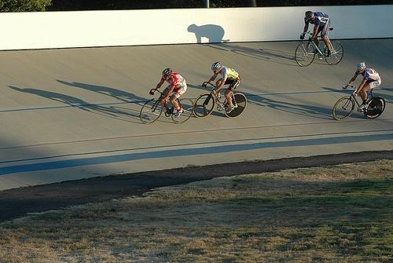

0.290483

0.441757

0.626956

0.642507

0.679012

0.685188
0.686428

0.713686

0.776021

0.802584
| Target image | 0.290483 | 0.441757 | 0.626956 | 0.642507 | 0.679012 | 0.685188 |  0.686428 | 0.713686 | 0.776021 | 0.802584 |
Target image |  13550.144531 |  3743.006348 |  3411.650391 |  2976.000000 |  2960.676514 |  2922.442871 |  2831.433105 |  2687.562744 |  2637.981689 |  2390.603760 |
Target image |  4261.520996 |  2613.850586 |  2376.855957 |  2327.235107 |  2224.696533 |  2057.803467 |  1998.373779 |  1955.754883 |  1938.346558 |  1881.640381 |
Target image |  8905.310547 |  3842.743652 |  3233.840576 |  2797.066406 |  2766.948975 |  2635.065674 |  2397.166016 |  2270.241943 |  2031.466797 |  2008.840576 |
Target image |  8126.428711 |  4673.601562 |  3836.595215 |  3177.184082 |  2785.502930 |  2641.218262 |  2544.770996 |  2228.628174 |  1989.152466 |  1970.063232 |